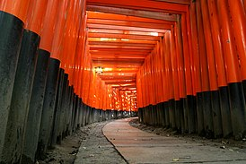
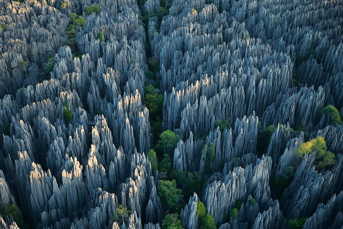
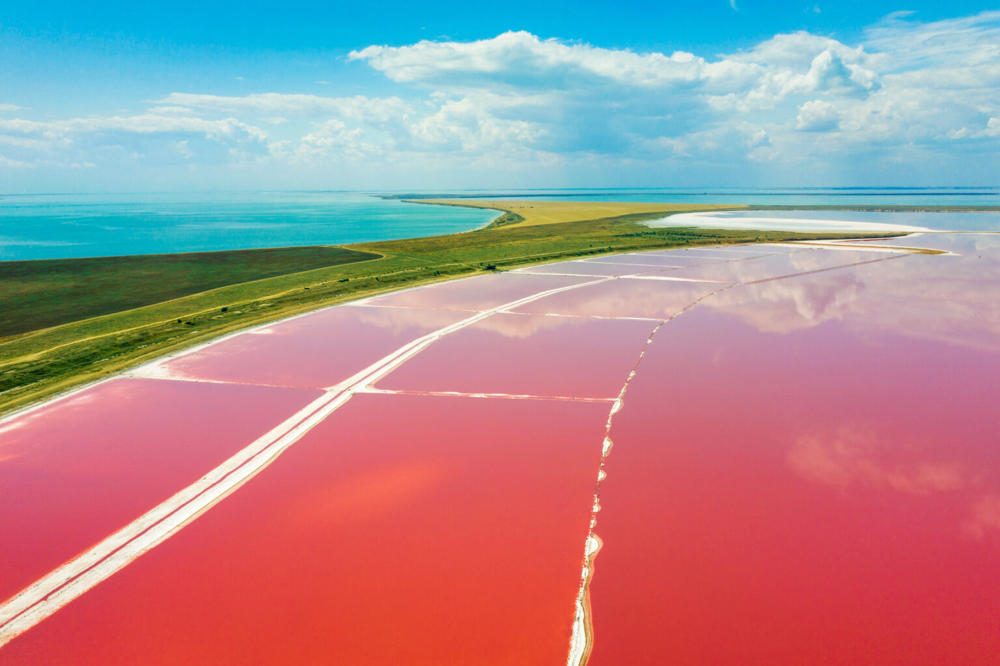

Inari-taisha, Japan
Fushimi Inari-taisha (Japanese: 伏見稲荷大社) is the head shrine of the kami Inari, located in Fushimi-ku, Kyoto, Kyoto Prefecture, Japan. The shrine sits at the base of a mountain, also named Inari, which is 233 metres (764 ft) above sea level, and includes trails up the mountain to many smaller shrines which span 4 kilometres (2.5 mi) and take approximately 2 hours to walk up. Inari was originally and remains primarily the kami of rice and agriculture, but merchants also worship Inari as the patron of business. Each of Fushimi Inari-taisha's roughly 10,000 torii was donated by a Japanese business, and approximately 800 of these are set in a row to form the Senbon Torii, creating the impression of a tunnel.
The temple gained great fame when it became a place of pilgrimage for the emperor in 1072. The oldest structures of the temple complex date back to 711. The temple was rebuilt in 816 at the request of the monk Kukai.
Stone Forest, China
The Stone Forest or Shilin (Chinese: 石林; pinyin: Shílín) is a notable set of limestone formations about 500 km2 located in Shilin Yi Autonomous County, Yunnan Province, People's Republic of China, near Shilin approximately 90 km (56 mi) from the provincial capital Kunming. The tall rocks seem to arise from the ground in a manner somewhat reminiscent of stalagmites, or with many looking like petrified trees, thereby creating the illusion of a forest made of stone. Since 2007, two parts of the site, the Naigu Stone Forest (乃古石林) and Suogeyi Village (所各邑村), have been UNESCO World Heritage Sites as part of the South China Karst. The site is classified as a AAAAA-class tourist site.
Shilin National Scenic Area (昆明市石林风景区) covers an area of 400 km2 (150 sq mi) and is divided into seven scenic areas as follows:
- Greater & Lesser Stone Forests (大小石林) - also known as the Lizijing Stone Forest (李子菁石林)
- Naigu Stone Forest (乃古石林)
- Zhiyun Cave (芝云洞)
- Lake Chang (长湖 literally Long Lake)
- Lake Yue (月湖 literally Moon Lake)
- Dadieshui Waterfall (大叠水瀑布)
- Qifeng Cave (奇峰洞)
Hida-Sannogu Shrine in Takayama, Japan

With a history tracing back to the 8th century, Fushimi Inari Taisha is the headquarters of the some 30,000 Inari shrines around the country. Located on and around Mt. Inari, the shrine complex is comprised of easily accessible worship halls at the base of the mountain connected via vermilion torii gate-lined paths winding up the heavily wooded heights to more remote inner shrines and surprises that require some hiking to reach. Some ten thousand torii gates line the walkways of Fushimi Inari Taisha and serve as its most charming and outstanding feature. Another popular point of this shrine is the numerous statues of kitsune, foxes who are thought to serve as the messengers of the god of agriculture and business, Inari. It’s quite fun to take a stroll throughout the shrine grounds seeing how many sorts of fox statues you can locate. At the base of the mountain visitors can enjoy the large first torii gate right outside the local train station as well as the towering shrine gate before reaching the prayer hall, the main hall, and the shrine offices, with several souvenir shops nearby selling all manner of fox-related memorabilia. A short hike up a slight incline takes one to the mid-way shrine where you can write a wish on a fox-shaped votive tablet. Those with more time and energy can continue hiking up the mountain to the shrine at the very top and discover some of the more hidden gems of the shrine the deeper you go in to the forest, as well as enjoy the panoramic view of the city below.
Pink Lakes, Ukraine
The Kherson region doesn’t need to house any SpaceX launch facilities. Mars is already there.
The unique pink lakes could be found all over the region serving as perfect natural photo studios for tourists and photo artists. In spring 2020 an astonishing photo of Lemurian Lake (from the series ‘At The Pink Planet’ by Yevhen Samuchenko) was published in the center spread of National Geographic.
Lakes’ pink color is a natural phenomenon. Components involved are water, salt, sun and one micro-algae of great vitality.
The entire gulf salt stock of Lemurian Lake exceeds 200 million tons and its concentration in water reaches up to 35% (making the lake even more salty than the famous Dead Sea in Israel). Other lakes do not trail far behind. The only inhabitant of these lakes is the unicellular algae Dunaliella salina. Under the streams of sun this extraordinary micro-algae starts to act as a carrot and produces beta carotene. ‘La Vie en Rose’ begins.
Disclaimer: No offence, Mr Musk. Just a joke about SpaceX. The Kherson region as well as the whole Ukraine will definitely consider any of your offers.